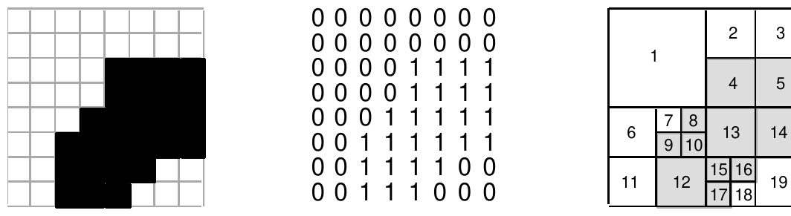
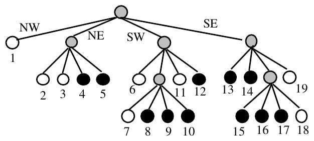

The 22nd Annual ACM International Collegiate Programming Contest World Finals · Problem G
Computer graphics, image processing, and GIS (geographic information systems) all make use of a data structure called a quadtree. Quadtrees represent regional or block data efficiently and support efficient algorithms for operations like the union and intersection of images.
A quadtree for a black and white image is constructed by successively dividing the image into four equal quadrants. If all the pixels in a quadrant are the same color (all black or all white) the division process for that quadrant stops. Quadrants that contain both black and white pixels are subdivided into four equal quadrants and this process continues until each subquadrant consists of either all black or all white pixels. It is entirely possible that some subquadrants consist of a single pixel.
For example, using 0 for white and 1 for black, the region on the left below is represented by the matrix of zeros and ones in the middle. The matrix is divided into subquadrants as shown on the right where gray squares represent subquadrants that consist entirely of black pixels.

A quadtree is constructed from the block structure of an image. The root of the tree represents the entire array of pixels. Each non-leaf node of a quadtree has four children, corresponding to the four subquadrants of the region represented by the node. Leaf nodes represent regions that consist of pixels of the same color and thus are not subdivided. For example, the image shown above, with the block structure on the right, is represented by the quadtree below.

Leaf nodes are white if they correspond to a block of all white pixels, and black if they correspond to a block of all black pixels. In the tree, each leaf node is numbered corresponding to the block it represents in the diagram above. The branches of a non-leaf node are ordered from left-to-right as shown for the northwest, northeast, southwest, and southeast quadrants (or upper-left, upper-right, lower-left, lower-right).
A tree can be represented by a sequence of numbers representing the root-to-leaf paths of black nodes. Each path is a base five number constructed by labeling branches with 1, 2, 3, or 4 with NW = 1, NE = 2, SW = 3, SE = 4, and with the least significant digit of the base five number corresponding to the branch from the root. For example, the node labeled 4 has path NE, SW which is 325 (base 5) or 1710 (base 10); the node labeled 12 has path SW, SE or 435 = 2310; and the node labeled 15 has path SE, SW, NW or 1345 = 4410. The entire tree is represented by the sequence of numbers (in base 10)
9 14 17 22 23 44 63 69 88 94 113
Write a program that converts images into root-to-leaf paths and converts root-to-leaf paths into images.
The input contains one or more images. Each image is square, and the data for an image starts with an integer n, where |n| is the length of a side of the square (always a power of two, with |n| < 64) followed by a representation of the image. A representation is either a sequence of n² zeros and ones comprised of |n| lines of |n| digits per line, or the sequence of numbers that represent the root-to-leaf paths of each black node in the quadtree that represents the image.
If n is positive, the zero/one representation follows; if n is negative, the sequence of black node path numbers (in base 10) follows. The sequence is terminated by the number -1. A one-node tree that represents an all-black image is represented by the number 0. A one-node tree that represents an all-white image is represented by an empty sequence (no numbers).
The end of data is signaled by a value of 0 for n.
For each image in the input, first output the number of the image, as shown in the sample output. Then output the alternate form of the image.
If the image is represented by zeros and ones, the output consists of root-to-leaf paths of all black nodes in the quadtree that represents the image. The values should be base 10 representations of the base 5 path numbers, and the values should be printed in sorted order. If there are more than 12 black nodes, print a newline after every 12 nodes. The total number of black nodes should be printed after the path numbers.
If the image is represented by the root-to-leaf paths of black nodes, the output consists of an ASCII representation of the image with the character ‘.’ used for white/zero and the character ‘*’ used for black/one. There should be n characters per line for an n×n image.
8 00000000 00000000 00001111 00001111 00011111 00111111 00111100 00111000 -8 9 14 17 22 23 44 63 69 88 94 113 -1 2 00 00 -4 0 -1 0
Image 1 9 14 17 22 23 44 63 69 88 94 113 Total number of black nodes = 11 Image 2 ........ ........ ....**** ....**** ...***** ..****** ..****.. ..***... Image 3 Total number of black nodes = 0 Image 4 **** **** **** ****